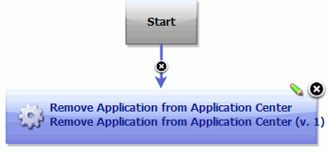
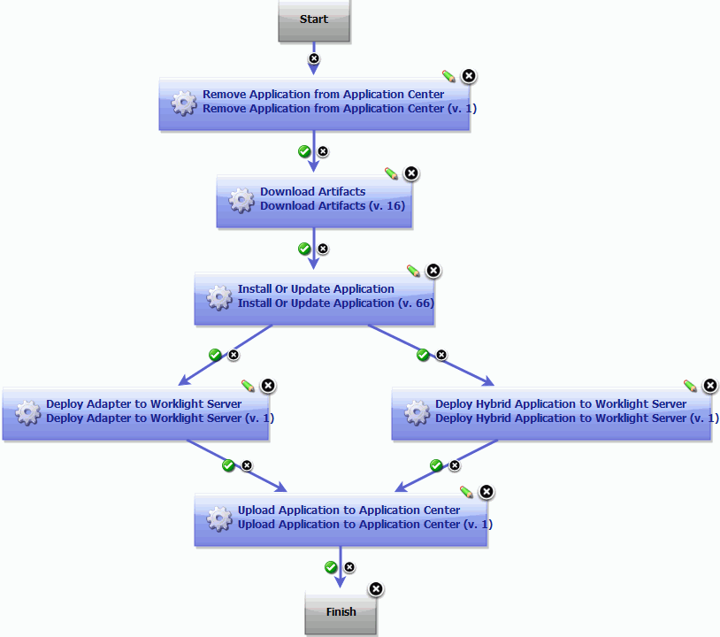
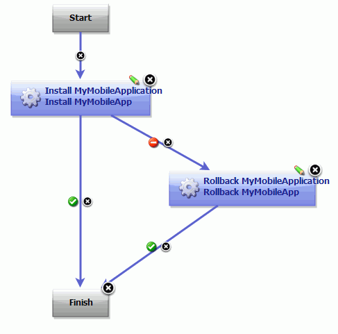

Rolling back mobile applications
There are a number of ways to roll back a mobile application that is deployed to IBM® MobileFirst Platform Foundation Server. One option is to remove the native application from the Application Center and then redeploy the application. Alternatively, you can manually roll back deployments.
-
To automate rolling back a mobile application deployment, create processes that use the following general steps:
-
At the component level, create a process that removes the native application from the MobileFirst Platform Foundation Application Center, and overwrite any deployed artifacts by redeploying the application:
-
To remove the native application from the MobileFirst Platform Foundation Application Center, add the Remove Application from Application Center step.

Tip: When you configure the Remove Application from Application Center step, specifying the Operating System and Version removes a specific native application, such as the version related to a failed deployment.
-
Any artifacts that were successfully deployed to the MobileFirst Platform Foundation Console are not removed. To overwrite the deployed artifacts, add process steps to redeploy the mobile application as described in the topic Deploying mobile applications. The following example process removes the native application from the MobileFirst Platform Foundation Application Center and redeploys the application:

-
-
At the application process level, create a process that includes the Rollback Component process step, and configure the step to call the component process that you created in the preceding steps. The Rollback Component step replaces the component version with an earlier version.
In the following application process example, if the Install Application step fails, then the Rollback Application step runs.

-
-
To manually roll back a mobile application deployment:
- Delete the native application from the MobileFirst Platform Foundation Application Center.
- In the MobileFirst Platform Foundation Console, delete the adapters and applications. For details, see the topics in the section Administering adapters and apps in Worklight Console in the MobileFirst Platform Foundation product help.
- Redeploy the previous version of the mobile application from HCL® UrbanCode™ Deploy.
Parent topic: Building and deploying mobile applications